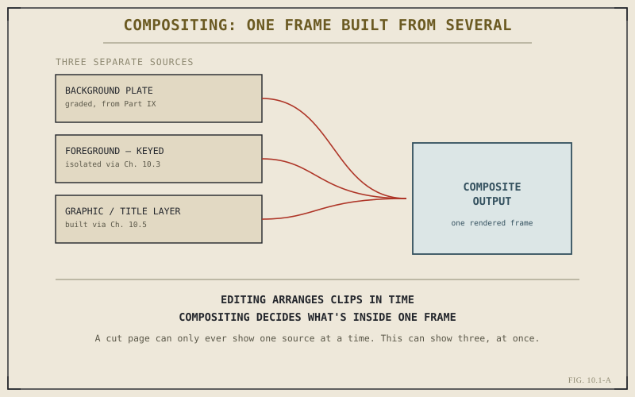

By the end of Chapter 9.8, a timeline is graded — every shot corrected, matched, and given the look the project actually calls for. It's tempting to treat that as the finish line, and for a large share of projects, it genuinely is. But grading only ever adjusts what's already inside a frame. It can't add something to the frame that was never captured in the first place, and it can't remove something that was captured but shouldn't be there. That's a different kind of work, and it's what Part X is about.
Compositing, Defined Precisely
Compositing means combining two or more visual elements — footage, graphics, mattes, generated elements — into a single final frame, as opposed to correcting the values already present in one existing frame. A green-screen interview placed over a different location. A removed boom mic or rig visible at the edge of a shot. A piece of animated type integrated into the scene rather than sitting flatly on top of it. In every case, the finished frame contains something that no single camera capture ever actually contained on its own — it had to be built, piece by piece, from more than one source.
Why This Wasn't Needed Until Now
Most footage in a typical cut never asks for this. A well-shot, well-graded single-camera scene is often genuinely finished the moment Part IX's work is done — nothing needs adding, nothing needs removing, and reaching for compositing tools on a shot that doesn't need them is effort spent solving a problem the frame doesn't have. Part X exists for the real minority of shots where that isn't true: where the frame, as captured, is deliberately incomplete, and finishing it means building something the camera alone couldn't deliver.

A cut page can only ever show one source at a time. This can show three, at once.
Where the Edit Page's Tools Already Stopped
This isn't entirely new territory — Chapter 7.4 already showed that packaged Fusion effects live directly on the Edit page, applying real compositing technology to a single clip without ever opening a dedicated compositing environment. That chapter also named the ceiling on that convenience plainly: once a shot needs several elements genuinely interacting, or behavior no packaged effect exposes a control for, the honest move is dropping into the full Fusion page. Part X is what's on the other side of that ceiling — the complete environment, not the pre-built shortcut version of it.
Grading corrects what a frame already has. Compositing builds a frame out of what it doesn't have yet — footage that was never captured together, a subject that was never actually standing in front of that background, a graphic that never existed on set at all.
Why Fusion Comes After Color in This Book
It's fair to ask why a book would cover grading before compositing, when in practice a composited shot sometimes needs its elements graded to match before they're combined, and sometimes needs grading afterward to unify the finished result. Both orders are legitimate on a real production, and Resolve's page-based structure — Chapter 1.2's core argument — doesn't force either one. This book teaches Color first because grading concepts are useful on every project, composited or not, while compositing is a narrower, more situational skill best learned once color thinking is already second nature. The node graph itself, though, is identical groundwork either way — Chapter 1.3 built exactly the same idea this part now applies to a different problem.
What Part X Actually Covers
The chapters ahead move from concept to hands-on capability in order. Chapter 10.2 translates Chapter 1.3's node-graph idea specifically into Fusion's vocabulary, centered on the Merge node — the tool that does the actual combining this chapter has only described in the abstract. Chapters 10.3 and 10.4 cover the two most common reasons to composite at all: keying a subject out of a background, and tracking or stabilizing motion so composited elements sit convincingly in a moving shot. Chapter 10.5 puts that toolkit to use building a real title or graphic from scratch, and Chapter 10.6 closes the part with the practical judgment call this chapter has already previewed once — recognizing when a shot's needs actually cross the line into full Fusion work.
Key Concepts to Remember
- Compositing combines multiple visual elements into one frame — a different job from grading, which only adjusts values already present in a single frame.
- Most shots never need this — Part X is for the real minority where a frame is deliberately incomplete as captured.
- Chapter 7.4's packaged Fusion effects are the convenient edge of this same technology — Part X is the full environment on the other side of that ceiling.
- Fusion runs on the identical node-graph idea Chapter 1.3 introduced — Part X applies it to compositing rather than color.
Cross-References Forward
| → Ch. 10.2 | Nodes vs. Layers: Thinking in Fusion — translates this chapter's compositing idea into Fusion's specific node vocabulary. |
| → Ch. 9.8 | Revisit the finished grading workflow this chapter picks up from — the frame Part X now builds on top of. |
| → Ch. 1.2 | Revisit why Resolve is built as separate pages, the structural reason grading and compositing don't force one fixed order. |